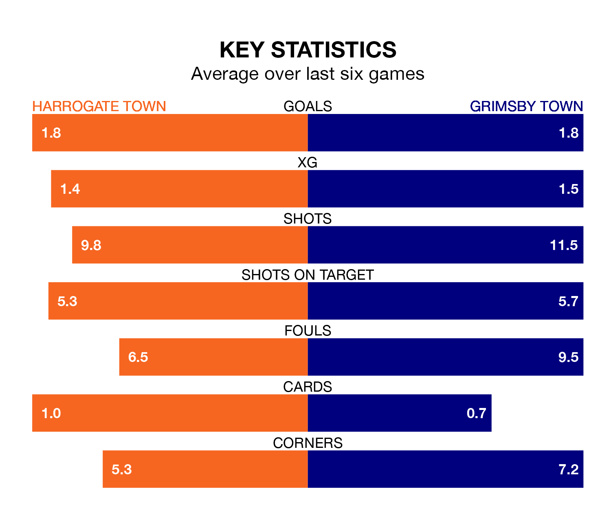

Grimsby Town travel to Harrogate Town on Saturday in EFL League Two.
The visitors come into the game on the back of a draw in their last match, having tied with Notts County 5-5 at home, with two goals from Abobaker Eisa, one from Danny Rose, one from Harry Clifton and one from Harry Wood.
Harrogate, meanwhile, won their last match, 2-0 against Forest Green Rovers, with their goals scored by Jack Muldoon and Abraham Odoh.
In the last 10 years, Harrogate and Grimsby have played each other on seven occasions. Harrogate won four of them, Grimsby one, and they drew twice.
On average, Harrogate scored 1.6 goals and the Mariners 1.4 in those matches.
Their last meeting was on December 23, when Harrogate won 2-1 away.
Grimsby are 19th in the table after 27 games, of which they have won six and drawn 10, earning 28 points.
Harrogate are 10 places ahead of Grimsby Town in ninth, with 12 wins and four draws putting them on 40 points.
With 34 goals in 27 games so far this season, Harrogate Town are scoring at below the league average rate with 1.3 goals per game. But they are conceding fewer than average too, letting in 35 goals at a rate of 1.3 per game.
The Mariners, meanwhile, are average scorers, with 1.5 goals per game. They have conceded 1.8 goals per game.
The hosts are in good form in EFL League Two, with four wins and a draw from their last six games.
With a win and two draws over that period, the away team's form is much worse – they have taken five points from 18, compared to Harrogate's 13.
Updated: 14:53 (UTC), 16/01/24